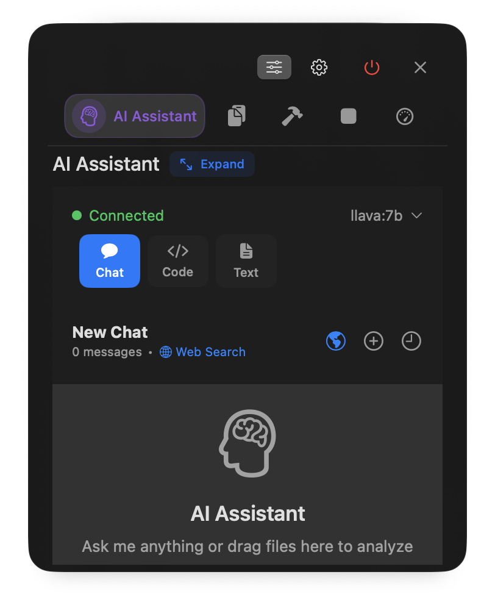
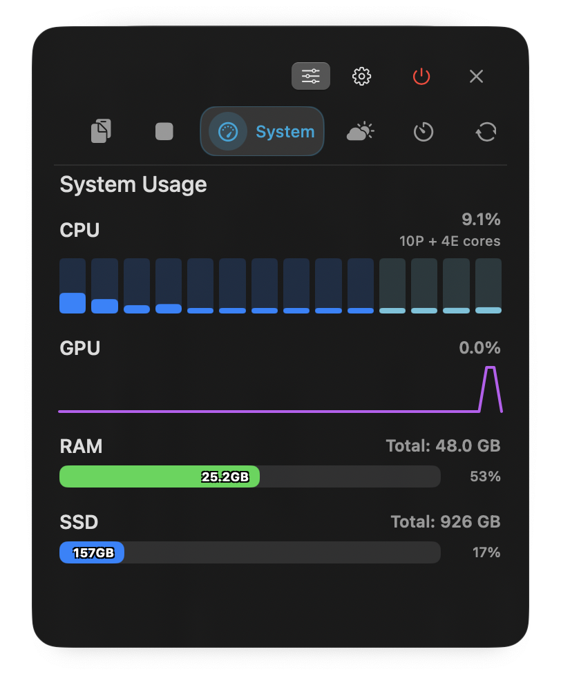
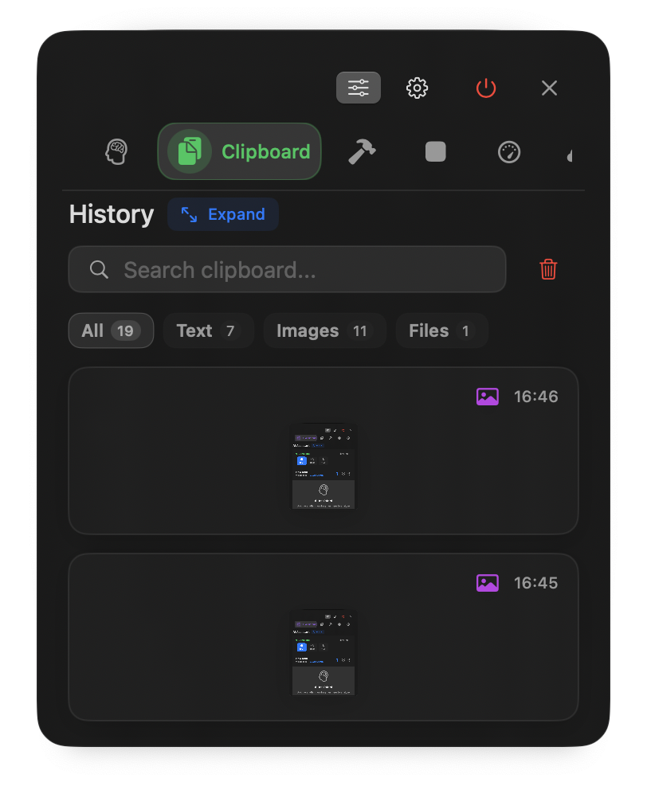
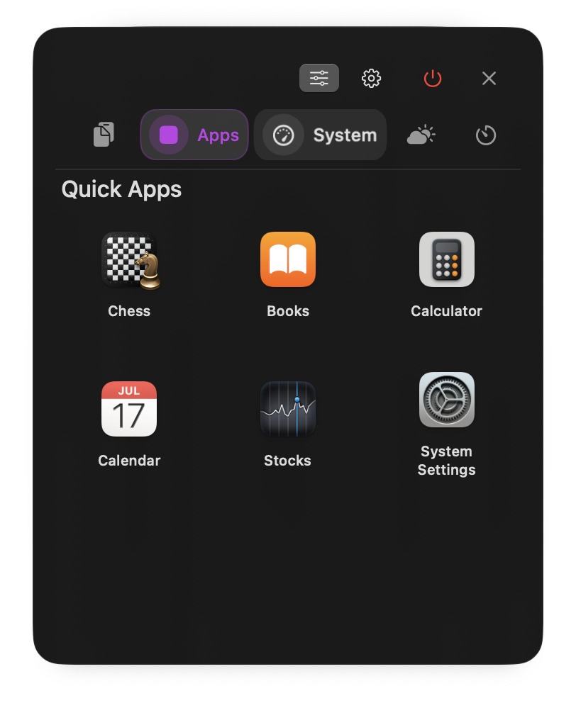
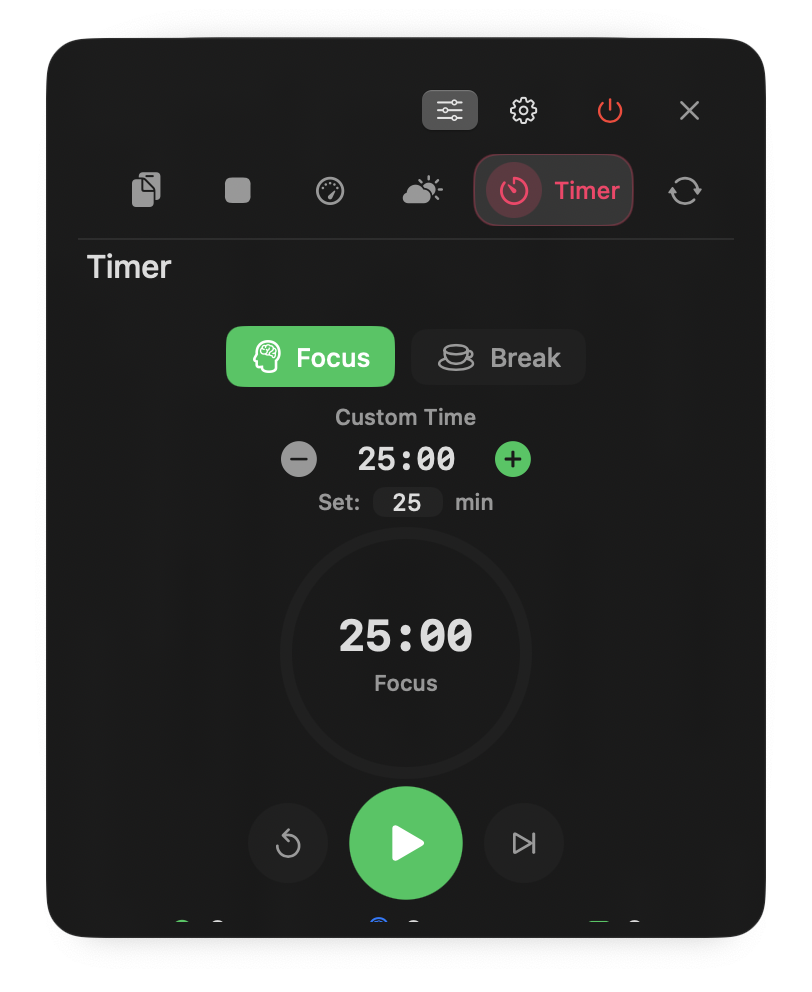
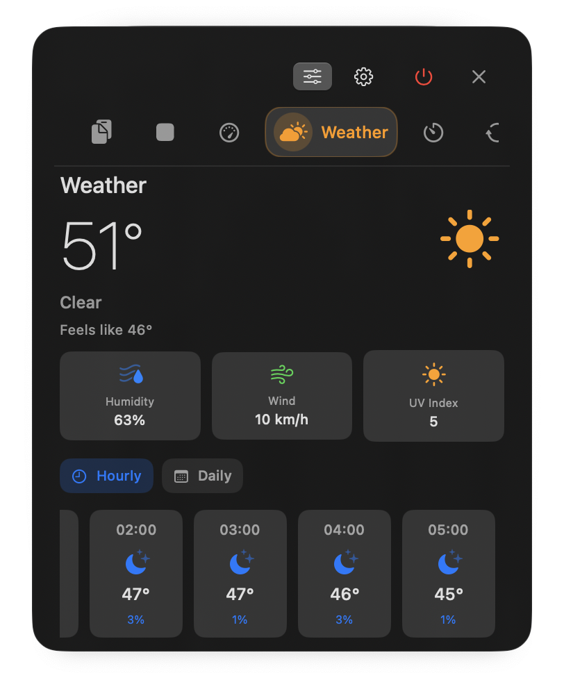
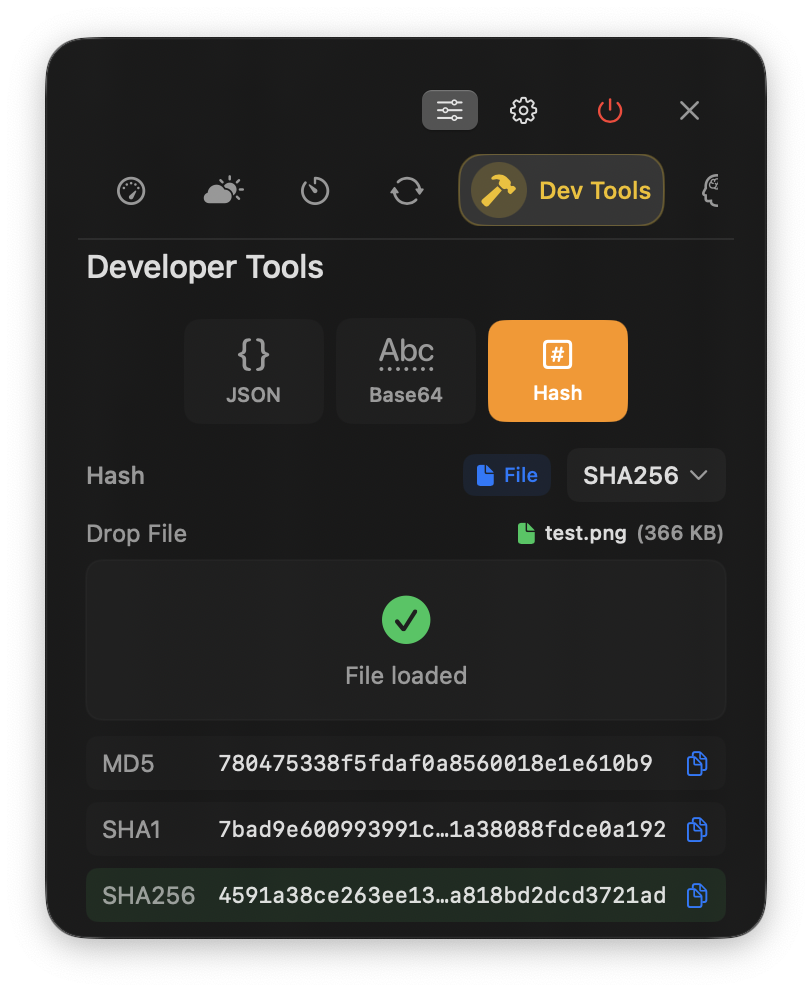

Feature Set
AI Assistant
Local AI processing via Ollama integration. Supports code analysis, text processing, file operations, and web search functionality.
System Monitor
Real-time hardware metrics visualization. CPU core usage, GPU utilization, memory statistics, and storage monitoring.
Clipboard Manager
Persistent clipboard history with search and pin functionality. Supports text, images, and file references.
App Launcher
Custom application shortcuts via drag-and-drop configuration. Quick access to frequently used applications.
Timer Functions
Pomodoro technique implementation with session tracking and background operation support.
Weather Data
Location-based weather information with automatic geolocation detection.
Unit Converter

Multi-category unit conversion including live currency exchange rates via API integration.
Developer Tools
JSON formatting/validation, Base64 encoding, hash generation (MD5, SHA family), and file hash calculation.
Installation
- Download DMG from releases page
- Mount and drag to Applications folder
- Launch app, click notch area to activate
- Optional: Install
ollamafor AI features